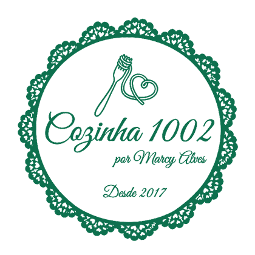
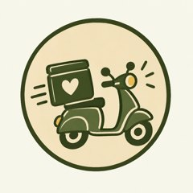

O sabor da Itáliaà sua mesa
Massas frescas artesanais, feitas à mão e sob encomenda, com o carinho de uma refeição preparada por alguém da família.

Feito à mão
Massa de verdade, do jeito artesanal.
Receita tradicional
Com a experiência de quem viveu na Itália.
Sem conservantes
Feito sob encomenda, em pequenos lotes.
Pronto em minutos
É só cozinhar e servir.
Nossa históriasinta-se em casa
A Cozinha 1002 é a cozinha da Marcy Alves. Formada em gastronomia, ela viveu na Itália e trouxe de lá as receitas tradicionais e o cuidado com cada etapa da massa fresca.
Desde 2017, cada pedido é feito à mão e sob encomenda, para chegar na sua mesa com sabor de casa.
Lasanha artesanalpronta para o forno
Preparada com carinho e sem conservantes. Chega congelada: é só levar ao forno e servir.
Ver cardápioComo pedirsimples assim
-
Escolha
O cardápio completo está na aba Massas frescas.
-

Chame no WhatsApp
Mande o pedido e a data em que quer receber.
-

Receba em casa
Entregamos na Zona Sul, Zona Norte, Barra da Tijuca e Niterói.
Restaurantes e eventosmassa artesanal no seu cardápio
Produzimos massa fresca para restaurantes, bistrôs e buffets. Combinamos quantidades e prazos direto com você.